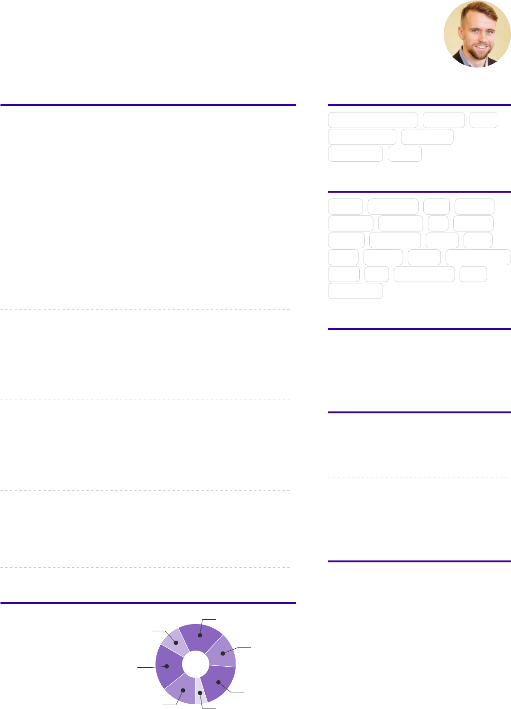

MICHAL BRYXÍ
Full stack web developer
michal.bryxi@gmail.com 0044 747 534 6614 Belfast, Northern Ireland www.pudr.com
@MichalBryxi linkedin.com/in/michalbryxi
STRENGTHS
Can break anything Curious Lazy
Love good UX Organized
Purposeful Social
TECHNOLOGIES
BASH Bootstrap CSS Docker
EmberJS Firebase git Heroku
HTML JavaScript Jekyll L
A
T
E
X
LESS Puppet React Ruby on Rails
SASS sed Semanc-UI SQL
Wordpress
LANGUAGES
Czech ○ ○ ○ ○ ○
English ○ ○ ○ ○ ○
German ○ ○ ○ ○ ○
Spanish ○ ○ ○ ○ ○
EDUCATION
M.S. in Computer Science
University of West Bohemia
2008 – 2011
B.S. in Computer Science
University of West Bohemia
2005 – 2008
LIFE PHILOSOPHY
“Cycle, climb, run, travel, enjoy life.”
EXPERIENCE
Front-end developer
Puppet
2013 – 2018 Belfast, Northern Ireland
• Frontend development of Puppet Enterprise Console.
Conguraon manager
IntraWorlds s.r.o.
2010 – 2013 Pilsen, Czechia
• Linux infrastructure maintenance and growth. OS/applicaon security and
performance. Automaon of daily developer tasks.
• Product / infrastructure migraon from ISO 8859-1 to UTF8.
• Implementaon of ISO 27001 - informaon security management system.
• Infrastructure migraon to Puppet.
Conguraon manager
vsechnyzakazky.cz
2012 Remote
• Automang administraon of linux servers via puppet.
• Virtualizaon - libvirt and KVM.
Webmaster, linux administrator
dione.zcu.cz
2008 – 2011 Pilsen, Czechia
• Implementaon of e-zine based on Drupal for University of West Bohemia.
• Linux system administraon.
Lector on network administrator course
Jan Ámos Komenský academy
2008 Pilsen, Czechia
• Network administrator course for labor oce.
FREE TIME
Running
Rock climbing
Cycling
Side projects
New things
Traveling
Geocaching